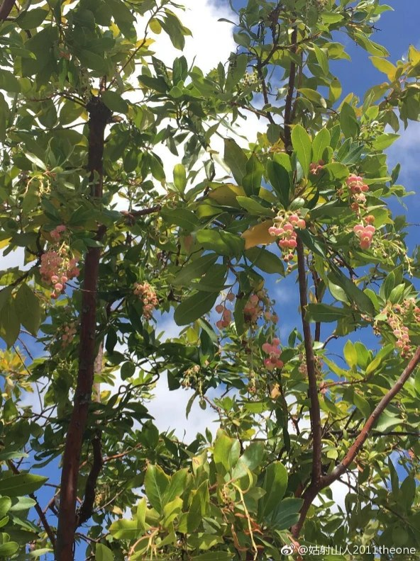

01
Applied Microeconomics
Empirical work on markets, trade and health, and the environment.
My research spans applied microeconomics, the economic and demographic history of Ming–Qing China, political economy, and economic theory.

Four areas, each with a few selected works. The complete list is on the Publications page.
01
Empirical work on markets, trade and health, and the environment.
02
Ming–Qing and quantitative economic history; population and life tables.
03
Political economy and related political-science research.
04
Auction theory, set-theoretic and extensive-form games, mechanism and information design, identification, and econometric foundations.